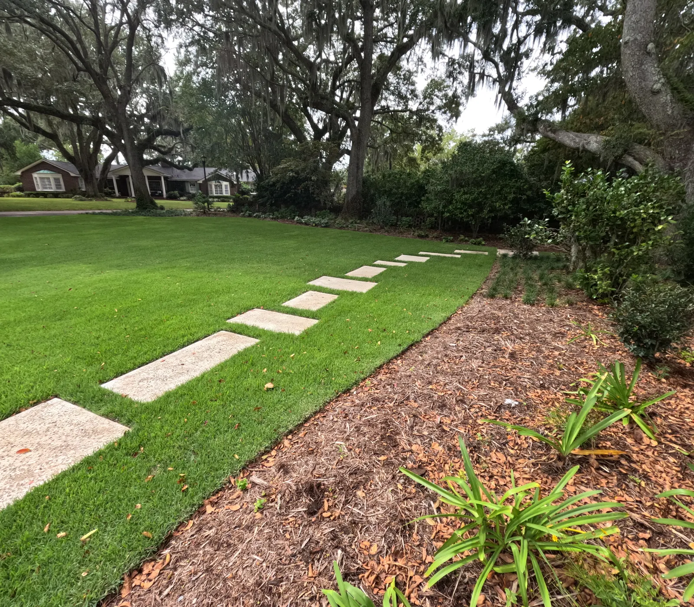
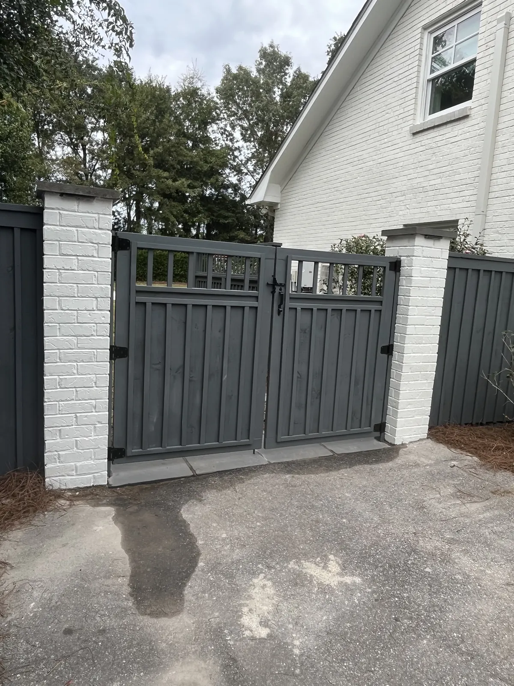
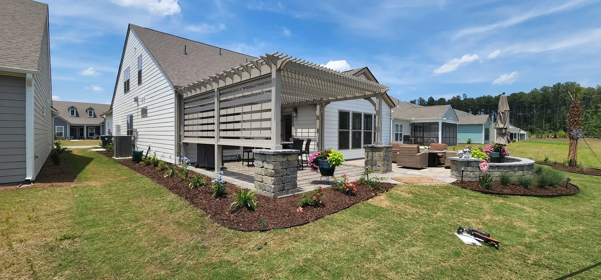

Landscape Installation in Charleston, SC

Landscape Installation in Charleston, SC
Creating a beautiful, functional outdoor space starts with a strong foundation—and at Cramers Landscaping, that foundation is our expert landscape installation service. Based in Charleston and serving the surrounding Lowcountry, we specialize in transforming blank or outdated lots into living, thriving environments designed for both immediate impact and long-term success.
Whether you're building a new home, reviving an aging lawn, or adding curb appeal to a rental or commercial property, our landscape installation services are tailored to your goals, budget, and future plans.

What is Landscape Installation?
Landscape installation is the process of designing and installing the core living elements of your outdoor space—everything from grading and soil preparation to sod, plantings, mulch, and beds. It’s more than planting flowers or laying grass. It’s a strategic, site-specific process that balances design, drainage, sustainability, and visual appeal. At Cramers Landscaping, we install:- Sod and turf (Zoysia, Bermuda, St. Augustine, and more)
- Trees, shrubs, and native plantings
- Flower beds and seasonal color rotations
- Bed edging and borders
- Mulch and pine straw
- Soil grading and amendment
- Groundcover and erosion control
Our Installation Process
We approach every landscape installation project with a clear, proven process:
Consultation

We meet with you on-site to assess your property, goals, and vision. Whether it’s a full front yard install, a side bed refresh, or a complete backyard transformation, we take the time to understand what matters most.
Design + Planning

Our team builds a custom plan that includes plant layout, material choices, soil or grading needs, and long-term growth considerations. We focus on native and zone-appropriate plants that will thrive in Charleston’s hot summers, mild winters, and occasional salt exposure.
Site Prep + Grading

Proper prep is key. We grade the land to ensure proper drainage, install any base materials, and amend the soil as needed for successful root growth and long-term health.
Installation

From start to finish, we treat your property with care. Our crew installs each element with precision, from carefully spacing plantings to laying clean bed edges and applying even mulch coverage.
Walkthrough + Maintenance Guidance

We walk the property with you to review the installation and provide tips on watering, care, and seasonal maintenance. We also offer landscape maintenance packages for ongoing support.

Benefits of Professional Landscape Installation
Hiring Cramers Landscaping means more than a quick refresh—it’s an investment in the beauty, value, and performance of your property.
Curb Appeal
A well-installed landscape instantly elevates the appearance of your home or business, making a positive impression on neighbors, guests, or potential buyers.
Property Value
According to real estate data, a professionally designed and installed landscape can boost property value by 10% to 15%. It’s one of the highest-ROI upgrades available.
Drainage and Erosion Control
Our installations improve water flow and reduce standing water, erosion, and runoff—especially important in Charleston’s flood-prone neighborhoods.
Environmental Health

Native plantings, tree canopies, and mulch all contribute to a healthier ecosystem, attract pollinators, and support local biodiversity.

Ideal for New Builds and Renovations
We frequently work with home builders, developers, and new homeowners looking to establish their landscaping from the ground up. We also support homeowners undergoing renovation who want to reimagine their outdoor space to match the updated style of their home.
If you're starting with a blank canvas or want to overhaul your current yard, we’ll help you select the right materials, sequence the installation properly, and ensure future additions—like patios or pergolas—fit seamlessly into the plan.
Serving the Greater Charleston Area
Cramers Landscaping provides landscape installation services throughout Charleston County and nearby areas, including:
We tailor every design to the terrain, microclimate, and architectural character of the area.

Pair with These Services
Landscape installation is often the first step in a larger outdoor plan. Many of our clients combine it with:- Hardscape Installation: patios, retaining walls, and walkways
- Irrigation Installation: for efficient, automated watering
- Drainage & Grading: to ensure proper runoff and prevent pooling
- Landscape Enhancements: lighting, seasonal color, and design upgrades
If you’re planning a full outdoor transformation, ask about our bundled service packages.
Frequently Asked Questions
How long does landscape installation take?
Most residential projects are completed within 3–7 business days, depending on scope and weather.
What’s the best time of year to install landscaping in Charleston?
Spring and fall are ideal planting seasons in the Lowcountry, but we install year-round based on plant type and weather conditions.
Do you offer warranties?
Yes. We stand behind the materials and labor we provide and offer installation warranties on plant health and workmanship.
Request a Free Landscape Consultation
Ready to bring your outdoor space to life? The team at Cramers Landscaping is here to guide you from concept to completion. Whether you’re planting for beauty, privacy, or sustainability, we’ll help you make the most of your property.
Contact us to schedule a free consultation and see why we're Charleston’s trusted name for landscape installation.